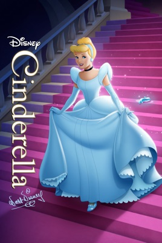

I have quite a variety of different favorite movies. If you have similar favorites let me know in the contact section!
 Revenge of the Sith (2005)...
Revenge of the Sith is set three years after the onset of the Clone Wars, established in Star Wars: Episode II: Attack of the Clones (2002). The Jedi are spread across the galaxy, leading a large-scale war against the Separatists.
Revenge of the Sith (2005)...
Revenge of the Sith is set three years after the onset of the Clone Wars, established in Star Wars: Episode II: Attack of the Clones (2002). The Jedi are spread across the galaxy, leading a large-scale war against the Separatists.

Mamma Mia (2008)... Donna (Meryl Streep), an independent hotelier in the Greek islands, is preparing for her daughter's wedding with the help of two old friends. Meanwhile Sophie, the spirited bride, has a plan. She secretly invites three men from her mother's past in hope of meeting her real father and having him escort her down the aisle on her big day.
Cinderella (1950)... With a wicked stepmother (Eleanor Audley) and two jealous stepsisters (Rhoda Williams, Lucille Bliss) who keep her enslaved and in rags, Cinderella (Ilene Woods) stands no chance of attending the royal ball. When her fairy godmother (Verna Felton) appears and magically transforms her reality into a dream come true.